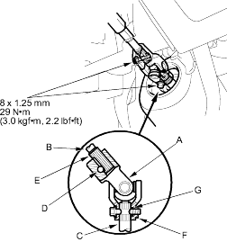
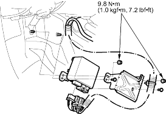

- Install the steering joint (A), and reconnect the steering shaft (B) and pinion shaft (C). Make sure the steering joint is connected as follows:
- Insert the upper end of the steering joint onto the steering shaft (line up the bolt hole (D) with the flat portion (E) on the shaft).
- Slip the lower end of the steering joint onto the pinion shaft (line up the bolt hole (F) with the groove (G) around the shaft), and loosely install the lower joint bolt. Be sure that the lower joint bolt is securely in the groove in the pinion shaft.
- Pull on the steering joint to make sure that the steering joint is fully seated. Then install the upper joint bolt and tighten it.

- Install the driver's dashboard lower covers.
- Centre the cable reel by first rotating it clockwise until it stops. Then rotate it counter-clockwise (about 2 and half turns) until the arrow mark on the label points straight up.
Reinstall the steering wheel (see page 17-8). - Install the front wheels.
- Install the motor on the steering gearbox (see page 17-95).
- After installation, perform the following checks.
- Perform the front toe inspection (see page 18-4).
- Check the steering wheel spoke angle. Adjust by turning the right and left tie-rods equally, if necessary.
- Disconnect the negative cable from the battery.
- Remove the passenger's under panel.
- Turn up the floor carpet, remove the EPS control unit.

- Disconnect the EPS control unit connectors.
- Install the EPS control unit in the reverse order of removal.
- After installation, start the engine and let it idle. Turn the steering wheel from lock-to-lock several times. Check that the EPS indicator does not come on.